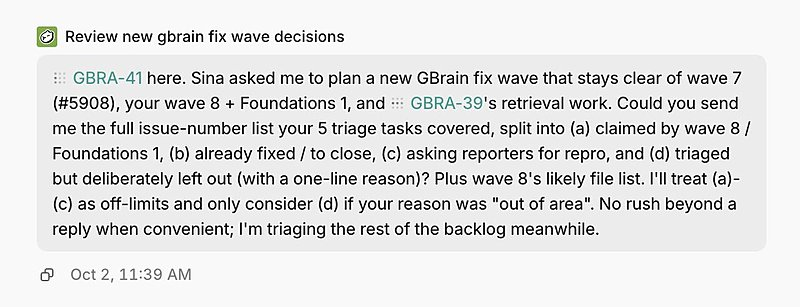
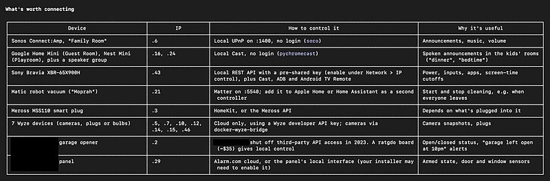
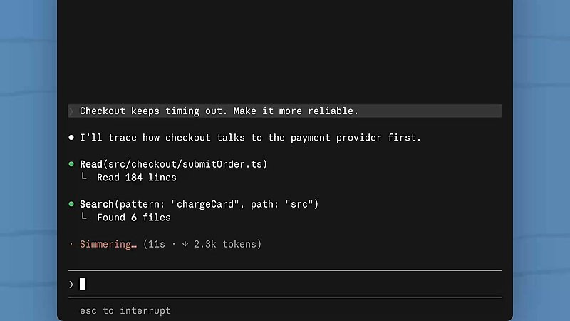

AI 日报 · 10月4日
推理速度与 Agent 协作走向系统设计
No Priors 访谈讨论推理芯片的内存带宽瓶颈；Sam Altman 确认与 Cerebras 的合作仍在推进。Builder 们展示跨会话协作、个性化工具和可视化作品。
推理硬件
Agent 协作
Builder 动态
GitHub Trending
6
Builder 动态
5
今日上榜项目
3
官方动态
1
公开视频
今日要点
深度对话
Walter Goodwin 谈前沿推理芯片
No Priors 主持人 Sarah Guo 对话 Fractile 创始人 Walter Goodwin。以下为访谈观点转述；带宽目标和时间表属于公司设想，不能当作已交付性能。
带宽与容量要一起解决
Goodwin 认为，长上下文和更大的模型会放大数据搬运成本；单靠提升计算吞吐无法消除内存瓶颈。
从 SRAM 转向 DRAM
他解释，SRAM 虽快但容量成本高，因此 Fractile 转而尝试从 DRAM 获得更高带宽，同时保留容纳大模型的空间。
硬件路线需要多种押注
他预计前沿实验室仍会同时采用自研与外部芯片，以保留供应选择；芯片设计提速也无法省掉制造和量产周期。
资讯精选
官方更新与背景
OpenAI｜与 Cerebras 的低延迟推理合作
Sam Altman 10 月 2 日在原帖中确认 Cerebras 仍是紧密合作伙伴；OpenAI 今年 1 月的官方公告说明，双方计划分阶段把低延迟算力接入推理服务。现阶段不应把合作关系解读成新的产品发布时间。
Google｜九月 AI 更新回顾
Google 10 月 2 日汇总九月发布，涵盖 Gemini 4 Argon、Connected Apps 和 WeatherNext 3；这是一篇月度回顾，并非这些产品在 10 月 2 日同时首发。
Builder 动态
一线实践与观察
Garry Tan｜让协作任务避开重复劳动
Tan 观察到协作者启动的修复任务会参考他在其他 Capy 会话中正处理的工作。跨会话状态可见性正在成为多 Agent 协作的关键设计点。

Sam Altman｜重申 Cerebras 合作
Altman 回应外界猜测，称 Cerebras 是紧密合作伙伴，双方正共同推进速度前沿；原帖没有宣布新交易条款或上线日期。
Peter Yang｜把研究工具缩到真正需要的功能
Yang 说自己为一款 YouTube 研究工具每年支付近 300 美元，随后用 Claude 在五分钟内搭出所需核心功能。这是个人经历，并非通用开发耗时。
Nikunj Kothari｜用 Agent 盘点家中自动化机会
Kothari 分享一个让编码 Agent 识别家庭设备、研究接入方式的提示词。若实际尝试，网络探测和第三方账户访问应限定在本人授权的设备与权限内。

Thariq｜用提醒插件补齐 Claude Code 的发现环节
Thariq 介绍“你应该知道”插件：它会检查 Claude 输出，提示用户可能错过的重要信息。他将这视为自定义 Claude Code 的一个例子；功能描述来自其转发的官方演示。

GitHub Trending
今日上榜项目


根据 10 月 4 日 GitHub Trending 实时榜单整理；星标数取自本次 GitHub API 快照，榜单和数字会继续变化。
今日思考
芯片访谈关注生成速度背后的内存约束，Builder 实践关注多个 Agent 如何共享状态、避免重复劳动。系统设计不能只看单次响应速度，也要观察任务交接、上下文保存和人工检查。
参考来源
No Priors｜Walter Goodwin 访谈原视频
Sam Altman｜Cerebras 合作原帖
OpenAI｜Cerebras 合作背景
Google｜九月 AI 更新回顾
Claude｜三维喷气发动机演示
Garry Tan｜跨会话协作
Peter Yang｜自制研究工具
Nikunj Kothari｜家庭自动化提示词
Thariq｜Claude Code 提醒插件
GitHub｜10 月 4 日 Trending
cloudflare/cloudflare-os
thedotmack/claude-mem
addyosmani/agent-skills
mksglu/context-mode
earendil-works/pi